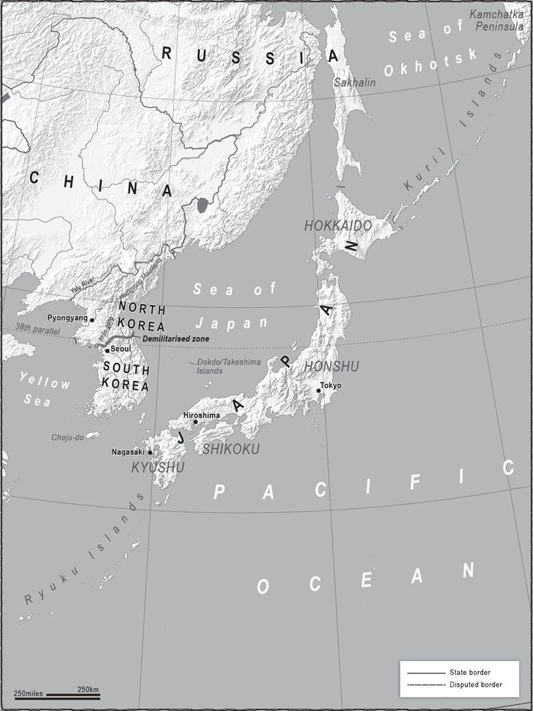
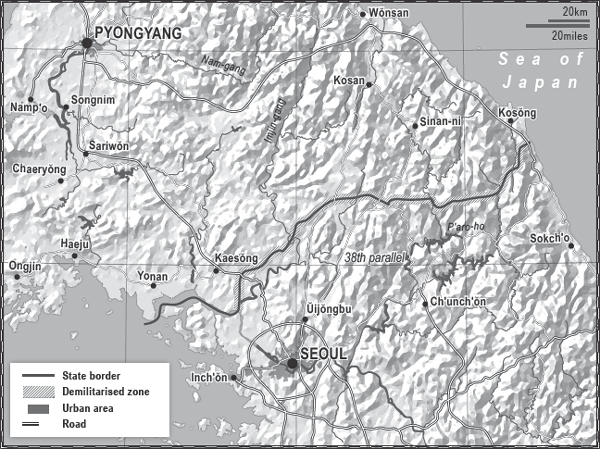

‘I . . . began to phrase a little pun about Kim Jong-il being the “Oh Dear Leader”, but it died on my lips.’
Christopher Hitchens, Love, Poverty
and War: Journeys and Essays

HOW DO YOU SOLVE A PROBLEM LIKE KOREA? YOU DON’T, YOU just manage it – after all, there’s a lot of other stuff going on around the world which needs immediate attention.
The whole of the region from Malaysia up to the Russian port of Vladivostok eyes the North/South Korea problem nervously. All the neighbours know it has the potential to blow up in their faces, dragging in other countries and damaging their economies. The Chinese don’t want to fight on behalf of North Korea, but nor do they want a united Korea containing American bases close to their border. The Americans don’t really want to fight for the South Koreans, but nor can they afford to be seen to be giving up on a friend. The Japanese, with their long history of involvement in the Korean Peninsula, must be seen to tread lightly, knowing that whatever happens will probably involve them.
The solution is compromise, but there is limited appetite for that in South Korea, and none at all displayed by the leadership of the North. The way forward is not at all clear; it seems as if it is always just out of sight over the horizon.
For several years the USA and Cuba have danced quietly around each other, dropping hints that they would like to tango without tangling, leading to the breakthrough in re-establishing diplomatic relations in July 2015. North Korea, on the other hand, glares at any requests from would-be suitors to take the floor, occasionally pulling faces.
North Korea is a poverty-stricken country of an estimated 25 million people, led by a basket case of a morally corrupt, bankrupt Communist monarchy, and supported by China, partly out of a fear of millions of refugees flooding north across the Yalu River. The USA, anxious that a military withdrawal would send out the wrong signal and embolden North Korean adventurism, continues to station almost 30,000 troops in South Korea, and the South, with mixed feelings about risking its prosperity, continues to do little to advance reunification.
All the actors in this East Asian drama know that if they try to force an answer to the question at the wrong time, they risk making things worse. A lot worse. It is not unreasonable to fear that you would end up with two capital cities in smoking ruins, a civil war, a humanitarian catastrophe, missiles landing in and around Tokyo and another Chinese/ American military face-off on a divided peninsula in which one side has nuclear weapons. If North Korea implodes, it might well also explode, projecting instability across the borders in the form of war, terrorism and/or a flood of refugees, and so the actors are stuck. And so the solution is left to the next generation of leaders, and then the next one.
If world leaders even speak openly about preparing for the day when North Korea collapses, they risk hastening that day; and as no one has planned for it – best keep quiet. Catch-22.
North Korea continues to play the crazed, powerful weakling to good effect. Its foreign policy consists, essentially, of being suspicious of everyone except the Chinese, and even Beijing is not to be fully trusted despite supplying 84.12 per cent of North Korea’s imports and buying 84.48 per cent of its exports, according to 2014 figures by the Observatory of Economic Complexity. North Korea puts a lot of effort into playing all outsiders off against each other, including the Chinese, in order to block a united front against it.
To its captive population it says it is a strong, munificent, magnificent state standing up against all the odds and against the evil foreigners, calling itself the Democratic People’s Republic of Korea (DPRK). It has a unique political philosophy of ‘Juche’, which blends fierce nationalism with Communism and national self-reliance.
In reality, it is the least democratic state in the world: it is not run for the people and it is not a republic. It is a dynasty shared by one family and one party. It also ticks every box in the dictatorship test: arbitrary arrest, torture, show trials, internment camps, censorship, rule of fear, corruption and a litany of horrors on a scale without parallel in the twenty-first century. Satellite images and witness testimony suggest that at least 150,000 political prisoners are held in giant work and ‘re-education’ camps. North Korea is a stain on the world’s conscience, and yet few people know the full scale of the horrors taking place there.
Such is the self-imposed isolation of the country, and the state’s almost total control of knowledge, that we can only guess at what the people may feel about their country, system and leaders and whether they support the regime. Analysing what is going on politically, and why, is akin to looking through an opaque window whilst wearing sunglasses. A former ambassador to Pyongyang once told me: ‘It’s like you are on one side of the glass, and you try to prise it open, but there’s nothing to get a grip on to peer inside.’
The founding story of Korea is that it was created in 2333 BCE by heavenly design. The Lord of Heaven sent his son Hwanung down to earth, where he descended to the Paektu (Baekdu) Mountain and married a woman who used to be a bear, and their son Dangun went on to engage in an early example of nation-building.
The earliest recorded version of this creation legend dates from the thirteenth century. It may in some ways explain why a Communist state has a leadership that is passed down through one family and given divine status. For example, Kim Jong-il was described by the Pyongyang propaganda machine as ‘Dear Leader, who is a perfect incarnation of the appearance that a leader should have’, ‘Guiding Sun Ray’, ‘Shining Star of Paektu Mountain’, ‘World Leader of the twenty-first century’ and ‘Great Man who descended from heaven’, as well as ‘Eternal Bosom of Hot Love’. His father had very similar titles, as does his son.
How does the general population feel about such statements? Even the experts are left guessing. When you look at footage of the mass hysteria of North Koreans mourning Kim Jong-il, who died in 2011, it’s interesting to note that after the first few rows of sobbing, shrieking people the level of grief appears to diminish. Is this because those at the front know the camera is on them and thus for their own safety they must do what is required? Or have the Party faithful been put at the front? Or are they ordinary people who are genuinely grief-stricken, a North Korean magnification of the sort of emotional outbursts we saw in the UK after the death of Princess Diana?
Nevertheless, the DPRK is still pulling off the crazy-dangerous, weak-dangerous act. It’s quite a trick, and its roots lie partially in Korea’s location and history, trapped as it is between the giants of China and Japan.
The name ‘The Hermit Kingdom’ was earned by Korea in the eighteenth century after it attempted to isolate itself following centuries of being a target for domination, occupation and plunder, or occasionally simply a route on the way to somewhere else. If you come from the north, then once you are over the Yalu River there are few major natural defensive lines all the way down to the sea, and if you can land from the sea the reverse is true. The Mongols came and went, as did the Chinese Ming dynasty, the Manchurians and the Japanese several times. So for a while the country preferred not to engage with the outside world, cutting many of its trade links in the hope that it would be left alone.
It was not successful. In the twentieth century the Japanese were back, annexing the whole country in 1910, and later set about destroying its culture. The Korean language was banned, as was the teaching of Korean history, and worship at Shinto shrines became compulsory. The decades of repression have left a legacy which even today impacts on relations between Japan and both the Korean states.
The defeat of Japan in 1945 left Korea divided along the 38th parallel. North of it was a Communist regime overseen first by the Soviets and later by Communist China, south of the line was a pro-American dictatorship called the Republic of Korea (ROK). This was the very beginning of the Cold War era when every inch of land was contested, with each side looking to establish influence or control around the world, unwilling to let the other maintain a sole presence.
The choice of the 38th parallel as the line of division was unfortunate in many ways and, according to the American historian Don Oberdorfer, arbitrary. He says that Washington was so focused on the Japanese surrender on 10 August 1945 that it had no real strategy for Korea. With Soviet troops on the move in the north of the peninsula and the White House convening an all-night emergency meeting, two junior officers, armed only with a National Geographic map, chose the 38th parallel as a place to suggest to the Soviets they halt, on the grounds that it was halfway down the country. One of those officers was Dean Rusk, who would go on to be Secretary of State under President Truman during the Korean War.
No Koreans were present, nor any Korea experts. If they had been they could have told President Truman and his then Secretary of State James Francis Byrnes that the line was the same one as the Russians and Japanese had discussed for spheres of influence half a century earlier, following the Russo–Japanese War of 1904–5. Moscow, not knowing that the Americans were making up policy on the hoof, could be forgiven for thinking this was the USA’s de facto recognition of that suggestion and therefore acceptance of division and a Communist north. The deal was done, the nation divided and the die cast.
The Soviets pulled their troops out of the north in 1948 and the Americans followed suit in the south in 1949. In June 1950, an emboldened North Korean military fatally underestimated America’s Cold War geopolitical strategy and crossed the 38th parallel, intent on reuniting the peninsula under one Communist government. The Northern forces raced down the country almost to the tip of the southern coast, sounding the alarm bells in Washington.
The North Korean leadership, and its Chinese backers, had correctly worked out that, in a strictly military sense, Korea was not vital to the USA; but what they failed to understand was that the Americans knew that if they didn’t stand up for their South Korean ally, their other allies around the world would lose confidence in them. If America’s allies, at the height of the Cold War, began to hedge their bets or go over to the Communist side, then its entire global strategy would be in trouble. There are parallels here with the USA’s policy in modern East Asia and Eastern Europe. Countries such as Poland, the Baltic States, Japan and the Philippines need to be confident that America has their back when it comes to their relations with Russia and China.
In September 1950 the USA, leading a United Nations force, surged into Korea, pushing the Northern troops back across the 38th parallel and then up almost to the Yalu River and the border with China.
Now it was Beijing’s turn to make a decision. It was one thing to have US forces on the peninsula, quite another when they were north of the parallel – indeed north of the mountains above Hamhung – and within striking distance of China itself. Chinese troops poured across the Yalu and thirty-six months of fierce fighting ensued with massive casualties on all sides before they ground to a halt along the current border and agreed a truce, but not a treaty. There they were, stuck on the 38th parallel, and stuck they remain.
The geography of the peninsula is fairly uncomplicated and a reminder of how artificial the division is between North and South. The real (broad-brush) split is west to east. The west of the peninsula is much flatter than the east and is where the majority of people live. The east has the Hamgyong mountain range in the north and lower ranges in the south. The demilitarised zone (DMZ), which cuts the peninsula in half, in parts follows the path of the Imjin-gang River, but this was never a natural barrier between two entities, just a river within a unified geographical space all too frequently entered by foreigners.
The two Koreas are still technically at war, and given the hair-trigger tensions between them a major conflict is never more than a few artillery rounds away.
Japan, the USA and South Korea all worry about North Korea’s nuclear weapons, but South Korea in particular has another threat hanging over it. North Korea’s ability to successfully miniaturise its nuclear technology and create warheads that could be launched is uncertain, but it is definitely capable, as it already showed in 1950, of a surprise, first-strike, conventional attack.
South Korea’s capital, the mega-city of Seoul, lies just 35 miles south of the 38th parallel and the DMZ. Almost half of South Korea’s 50 million people live in the greater Seoul region, which is home to much of its industry and financial centres, and it is all within range of North Korean artillery.

A major concern for South Korea is how close Seoul and the surrounding urban areas are to the border with North Korea. Seoul’s position makes it vulnerable to surprise attacks from its neighbour, whose capital is much further away and partially protected by mountainous terrain.
In the hills above the 148-mile-long DMZ the North Korean military has an estimated 10,000 artillery pieces. They are well dug in, some in fortified bunkers and caves. Not all of them could reach the centre of Seoul, but some could, and all are able to reach the greater Seoul region. There’s little doubt that within two or three days the combined might of the South Korean and US air forces would have destroyed many of them, but by that time Seoul would be in flames. Imagine the effect of just one salvo of shells from 10,000 artillery weapons landing in urban and semi-urban areas, then multiply it dozens of times.
Two experts on North Korea, Victor Cha and David Chang, writing for Foreign Policy magazine, estimated that the DPRK forces could fire up to 500,000 rounds towards the city in the first hour of a conflict. That seems a very high estimate, but even if you divide it by five the results would still be devastating. The South Korean government would find itself fighting a major war whilst simultaneously trying to manage the chaos of millions of people fleeing south even as it tried to reinforce the border with troops stationed below the capital.
The hills above the DMZ are not high and there is a lot of flat ground between them and Seoul. In a surprise attack the North Korean army could push forward quite quickly, aided by Special Forces who would enter via underground tunnels which the South Koreans believe have already been built. North Korea’s battle plans are thought to include submarines landing shock troops south of Seoul, and the activation of sleeper cells placed in the South’s population. It is estimated to have 100,000 personnel it regards as Special Forces.
The North has also already proved it can reach Tokyo with ballistic missiles by firing several of them over the Sea of Japan and into the Pacific, a route which takes them directly over Japanese territory. Its armed forces are more than a million strong, one of the biggest armies in the world, and even if large numbers of them are not highly trained they would be useful to Pyongyang as cannon fodder while it sought to widen the conflict.
The Americans would be fighting alongside the South, the Chinese military would be on full alert and approaching the Yalu, and the Russians and Japanese would be looking on nervously.
It is not in anyone’s interest for there to be another major war in Korea, as both sides would be devastated, but that has not prevented wars in the past. In 1950, when North Korea crossed the 38th parallel, it had not foreseen a three-year war with up to four million deaths, ending in stalemate. A full-scale conflict now might be even more catastrophic. The ROK’s economy is eighty times stronger than the North’s, its population is twice the size and the combined South Korean and US armed forces would almost certainly overwhelm North Korea eventually, assuming China did not decide to join in again.
And then what? There has been limited serious planning for such an eventuality. The South is thought to have done some computer modelling on what might be required, but it is generally accepted that the situation would be chaotic. The problems that would be created by Korea imploding or exploding would be multiplied if it happened as a result of warfare. Many countries would be affected and they would have decisions to make. Even if China did not want to intervene during the fighting, it might decide it had to cross the border and secure the North to retain the buffer zone between it and the US forces. It might decide that a unified Korea, allied to the USA, which is allied to Japan, would be too much of a potential threat to allow.
The USA would have to decide how far across the DMZ it would push and whether it should seek to secure all of North Korea’s sites containing nuclear and other weapons of mass destruction material. China would have similar concerns, especially as some of the nuclear facilities are only 35 miles from its border.
On the political front Japan would have to decide if it wanted a powerful, united Korea across the Sea of Japan. Given the brittle relations between Tokyo and Seoul, Japan has reasons to be nervous about such a thing, but as it has far greater concerns about China it would be likely to come down on the side of supporting reunification, despite the probable scenario that it would be asked to assist financially due to its long occupation of the peninsula in the last century. Besides, it knows what Seoul knows: most of the economic costs of reunification will be borne by South Korea, and they will dwarf those of German reunification. East Germany may have been lagging far behind West Germany, but it had a history of development, an industrial base and an educated population. Developing the north of Korea would be building from ground zero and the costs would hold back the economy of a united peninsula for a decade. After that the benefits of the rich natural resources of the north, such as coal, zinc, copper, iron and rare earth elements, and the modernisation programme would be expected to kick in, but there are mixed feelings about risking the prosperity of one of the world’s most advanced nations in the meantime.
Those decisions are for the future. For now each side continues to prepare for a war; as with Pakistan and India, they are locked in a mutual embrace of fear and suspicion.
South Korea is now a vibrant, integrated member of the nations of the world, with a foreign policy to match. With open water to its west, east and south, and with few natural resources, it has taken care to build a modern navy in the past three decades, one which is capable of getting out into the Sea of Japan and the East China Sea to safeguard the ROK’s interests. Like Japan it is dependent on foreign sources for its energy needs, and so keeps a close eye on the sea lanes of the whole region. It has spent time hedging its bets, investing diplomatic capital in closer relations with Russia and China, much to Pyongyang’s annoyance.
A miscalculation by either side could lead to a war which, as well as having devastating effects on the people of the peninsula, could wreck the economies of the region, with massive knock-on effects for the US economy. What started with the USA defending its Cold War stance against Russia has developed into an issue of strategic importance to its economy and that of several other countries.
South Korea still has issues with Tokyo relating back to the Japanese occupation, and even when it is at its best, which is rare, the relationship is only cordial. In early 2015 when the Americans, South Koreans and Japanese got down to the detail of an agreement to share military intelligence they had each gathered on North Korea, Seoul said it would pass only a limited amount of secret information to Tokyo via Washington. It will not deal directly with the Japanese.
The two countries still have a territorial dispute over what South Korea calls the Dokdo (solitary) Islands and the Japanese know as the Takeshima (bamboo) islands. The South Koreans currently control the rocky outcrops, which are in good fishing grounds, and there may be gas reserves in the region. Despite this thorn in their sides, and the still-fresh memories of occupation, both have reasons to co-operate and leave behind their troubled past.
Japan’s history is very different to that of Korea, and the reason for this is partly due to its geography.
The Japanese are an island race, with the majority of the 127 million population living mostly on the four large islands that face Korea and Russia across the Sea of Japan, and a minority inhabiting some of the 6,848 smaller islands. The largest of the main islands is Honshu, which includes the biggest mega-city in the world, Tokyo, and its 39 million people.
At its closest point Japan is 120 miles from the Eurasian land mass, which is among the reasons why it has never been successfully invaded. The Chinese are some 500 miles away across the East China Sea; and although there is Russian territory much nearer, the Russian forces are usually far away because of the extremely inhospitable climate and sparse population located across the Sea of Okhotsk.
In the 1300s the Mongols tried to invade Japan after sweeping through China, Manchuria and down through Korea. On the first occasion they were beaten back and on the second a storm wrecked their fleet. The seas in the Korean Strait were whipped up by what the Japanese said was a ‘Divine Wind’ which they called a ‘kamikaze’.
So the threat from the west and north-west was limited, and to the south-east and east there was nothing but the Pacific. This last perspective is why the Japanese gave themselves the name ‘Nippon’ or ‘sun origin’: looking east there was nothing between them and the horizon, and each morning, rising on that horizon, was the sun. Apart from sporadic invasions of Korea they mostly kept themselves to themselves until the modern world arrived, and when it did, after first pushing it away, they went out to meet it.
Opinions differ about when the islands became Japan, but there is a famous letter sent from what we know as Japan to the Emperor of China in 617 CE in which a Japanese leading nobleman writes: ‘Here I the emperor of the country where the sun rises send a letter to the emperor of the country where the sun sets. Are you healthy?’ History records that the Chinese Emperor took a dim view of such perceived impertinence. His empire was vast, while the main Japanese islands were still only loosely united, a situation which would not change until approximately the sixteenth century.
The territory of the Japanese islands makes up a country which is bigger than the two Koreas combined, or in European terms bigger than Germany. However, three-quarters of the land is not conducive to human habitation, especially in the mountainous regions, and only 13 per cent is suitable for intensive cultivation. This leaves the Japanese living in close proximity to each other along the coastal plains and in restricted inland areas, where some stepped rice fields can exist in the hills. Its mountains mean that Japan has plenty of water, but the lack of flatland also means that its rivers are unsuited to navigation and therefore trade, a problem exacerbated by the fact that few of the rivers join each other.
So the Japanese became a maritime people, connecting and trading along the coasts of their myriad islands, making forays into Korea, and then after centuries of isolation pushing out to dominate the whole region.
By the beginning of the twentieth century Japan was an industrial power with the third-largest navy in the world, and in 1905 it defeated the Russians in a war fought on land and at sea. However, the very same island-nation geography that had allowed it to remain isolated was now giving it no choice but to engage with the world. The problem was that it chose to engage militarily.
Both the First Sino-Japanese War and the Russo-Japanese War were fought to thwart Chinese and Russian influence in Korea. Japan considered Korea to be, in the words of its Prussian military advisor, Major Klemens Meckel, ‘A dagger pointed at the heart of Japan’. Controlling the peninsula removed the threat, and controlling Manchuria made sure the hand of China, and to a lesser extent Russia, could not get near the dagger’s handle. Korea’s coal and iron ore would also come in handy.
Japan had few of the natural resources required to become an industrialised nation. It had limited and poor-quality supplies of coal, very little oil, scant quantities of natural gas, limited supplies of rubber and a shortage of many metals. This is as true now as it was 100 years ago, although offshore gas fields are being explored along with undersea deposits of precious metals. Nevertheless it remains the world’s largest importer of natural gas, and third-largest importer of oil.
It was the thirst for these products that caused Japan to rampage across China in the 1930s and then South-East Asia in the early 1940s. It had already occupied Taiwan in 1895 and followed this up with the annexation of Korea in 1910. Japan occupied Manchuria in 1932, then conducted a full-scale invasion of China in 1937. As each domino fell, the expanding empire and the growing Japanese population required more oil, more coal, more metal, more rubber and more food.
With the European powers preoccupied with war in Europe, Japan went on to invade northern Indo-China. Eventually the Americans, who by then were supplying most of Japan’s oil needs, gave them an ultimatum – withdrawal or an oil embargo. The Japanese responded with the attack on Pearl Harbor and then swept on across South-East Asia, taking Burma, Singapore and the Philippines, among other territory.
This was a massive overstretch, not just taking on the USA, but grabbing the very resources, rubber for example, which the USA required for its own industry. The giant of the twentieth century mobilised for total war. Japan’s geography then played a role in its greatest catastrophe – Hiroshima and Nagasaki.
The Americans had fought their way across the Pacific, island to island, at great cost. By the time they took Okinawa, which sits in the Ryukyu Island chain between Taiwan and Japan, they were faced with a still-fanatical enemy prepared to defend the approaches and four main islands from amphibious invasion. Massive US losses were predicted. If the terrain had been easier the American choice may have been different – they might have fought their way to Tokyo – but they chose the nuclear option, unleashing upon Japan, and the collective conscience of the world, the terror of a new age.
After the radioactive dust had settled on a complete Japanese surrender, the Americans helped them rebuild, partially as a hedge against Communist China. The new Japan showed its old inventiveness and within three decades became a global economic powerhouse.
However, its previous belligerence and militarism were not entirely gone: they had just been buried beneath the rubble of Hiroshima and Nagasaki and a shattered national psyche. Japan’s post-war constitution did not allow for it to have an army, air force or navy, only ‘Self-Defence Forces’ which for decades were a pale shadow of the pre-war military. The post-war agreement imposed by the USA limited Japan’s defence spend to 1 per cent of GDP and left tens of thousands of American forces on Japanese territory, 32,000 of whom are still there.
But by the early 1980s the faint stirrings of nationalism could again be detected. There were sections of the older generation who had never accepted the enormity of Japan’s war crimes, and sections of the younger who were not prepared to accept guilt for the sins of their fathers. Many of the children of the Land of the Rising Sun wanted their ‘natural’ place under the sun of the post-war world.
A flexible view of the constitution became the norm, and slowly the Japanese Self-Defence Forces were turned into a modern fighting unit. This happened as the rise of China was becoming increasingly apparent and so the Americans, realising they were going to need military allies in the Pacific region, were prepared to accept a re-militarised Japan.
In the present century Japan has altered its defence policy to allow its forces to fight alongside allies abroad, and changes to the constitution are expected to follow to put this on a more solid legal footing. Its 2013 Security Strategy document was the first in which it named a potential enemy, saying: ‘China has taken actions that can be regarded as attempts to change the status quo by coercion.’
The 2015 defence budget was its biggest to date at US$42 billion, mostly going on naval and air equipment, including six US-made F-35A stealth fighters. In the spring of 2015 Tokyo also unveiled what it called a ‘helicopter-carrying destroyer’. It didn’t take a military expert to notice that the vessel was as big as the Japanese aircraft carriers of the Second World War, which are forbidden by the surrender terms of 1945. The ship can be adapted for fixed-wing aircraft but the defence minister issued a statement saying that he was ‘not thinking of using it as an aircraft carrier’. This is akin to buying a motorbike then saying that because you were not going to use it as a motorbike, it is a pushbike. The Japanese now have an aircraft carrier.
The money spent on that and other shiny new kit is a clear statement of intent, as is much of its positioning. The military infrastructure at Okinawa, which guards the approaches to the main islands, will be upgraded. This will also allow Japan greater flexibility to patrol its Air Defence Zone, part of which overlaps with China’s equivalent zone after an expansion was announced by Beijing in 2013.
Both zones cover the islands called the Senkaku or Diaoyu (in Japanese and Chinese respectively), which Japan controls but which are claimed by China too. They also form part of the Ryukyu Island chain, which is particularly sensitive as any hostile power must pass the islands on the way to the Japanese heartlands; they give Japan a lot of territorial sea space and they might contain exploitable underwater gas and oil fields. Thus Tokyo intends to hold on to them by all means necessary.
China’s expanded ‘Air Defence Identification Zone’ in the East China Sea covers territory claimed by China, Japan, Taiwan and South Korea. When Beijing said that any plane flying through the zone must identity itself or ‘face defensive measures’, Japan, South Korea and the United States responded by flying through it without doing so. There was no hostile response from China, but this is an issue that can be turned into an ultimatum at a time of Beijing’s choosing.
Japan also claims sovereignty over the Kuril Islands in its far north, off Hokkaido, which it lost to the Soviet Union in the Second World War and which are still under Russian control. Russia prefers not to discuss the matter, but the debate is not in the same league as Japan’s disputes with China. There are only approximately 19,000 inhabitants of the Kuril Islands, and although the islands sit in fertile fishing grounds, the territory is not one of particular strategic importance. The issue ensures that Russia and Japan maintain a frosty relationship, but within that frost they have pretty much frozen the question of the islands.
It is China that keeps Japanese leaders awake at night and keeps them close to the USA, diplomatically and militarily. Many Japanese, especially on Okinawa, resent the US military presence, but the might of China, added to the decline in the Japanese population, is likely to ensure that the post-war USA–Japan relationship continues, albeit on a more equal basis. Japanese statisticians fear that the population will shrink to under 100 million by the middle of the century. China’s enormous population being 1.3 billion people, Japan will need friends in the neighbourhood.
So the Americans are staying in both Korea and Japan. There is now a triangular relationship between them, as underlined by the intelligence agreement noted above. Japan and South Korea have plenty to argue about, but will agree that their shared anxiety about China and North Korea will overcome this.
Even if they do go on to solve a problem like Korea, the issue of China will still be there, and this means the US 7th Fleet will remain in the Bay of Tokyo and US Marines will remain in Okinawa, guarding the paths in and out of the Pacific and the China Seas. The waters can be expected to be rough.